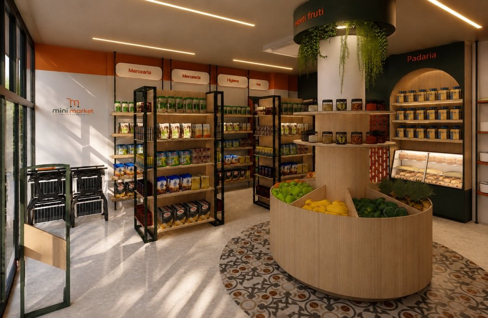
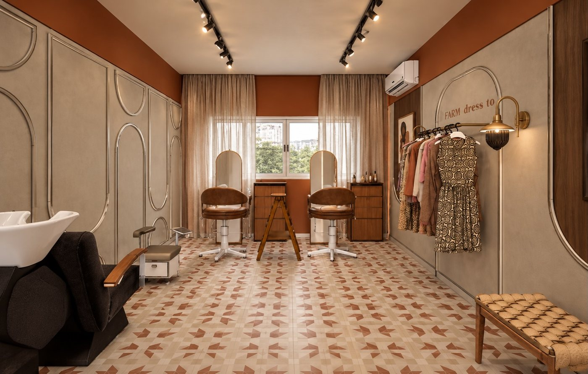
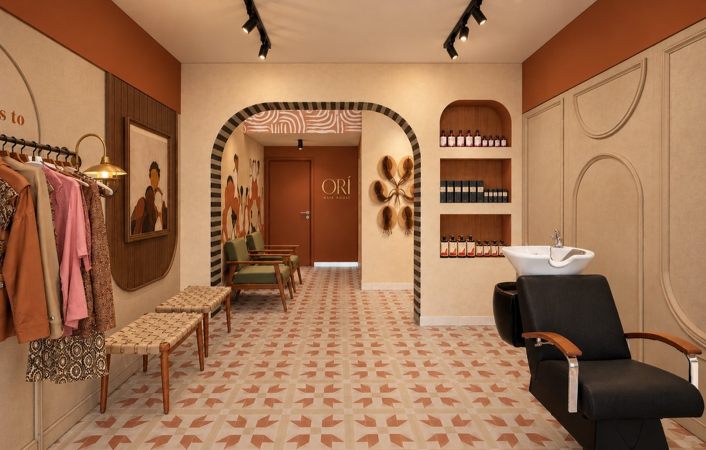
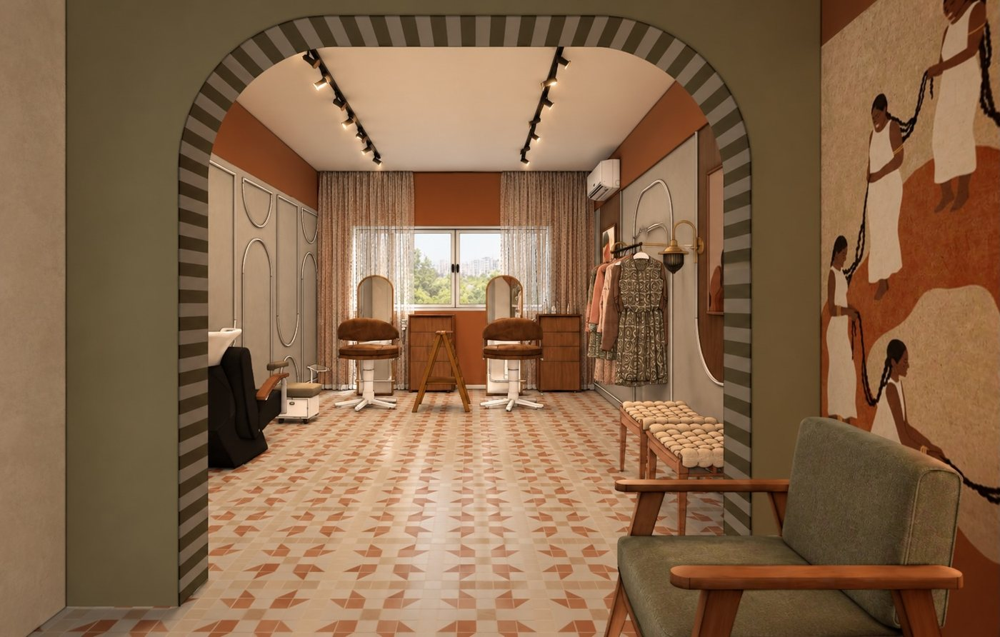

Início · Projetos · Comercial e varejo
Comercial e varejo: afeto também vende.
“Projetos Comerciais, residenciais e corporativos” é como a Neri Interiores se apresenta no Google. No comércio, o design afetivo vira identidade de marca, acolhimento e uma experiência para quem entra.
Varejo · render
Mini Market


“Neste projeto, o desafio foi transformar um espaço compacto em uma experiência de compra prática, acolhedora e visualmente marcante. Design afetivo aplicado ao varejo”Legenda no Instagram
Salão de beleza · render
Studio Orí

“Studio Orí, esse é um projeto que carrega muito do design do que o escritório acredita, com a essência do cliente com a personalidade da marca dela. Espaço criado para acolher e pertencer.”Legenda no Instagram


Conceito
Design afetivo no varejo
Num comércio, o afeto aparece no acolhimento de quem chega, na marca que se reconhece no espaço e no conforto de quem trabalha ali todos os dias.
No Mini Market, o desafio era o espaço compacto; no Studio Orí, juntar a essência da cliente com a personalidade da marca. Em ambos, o projeto parte de quem usa o espaço.
Informação geral
O que um projeto comercial considera
Fluxo
Por onde o cliente entra, circula, espera e paga; por onde a equipe trabalha.
Exposição
Como os produtos ou serviços aparecem: gôndolas, araras, bancadas e vitrines.
Identidade
Cores, materiais e elementos que fazem o espaço lembrar a marca.
Iluminação e conforto
Luz para vender ou atender bem, e materiais que aguentam o uso diário.
Shoppings, condomínios comerciais e a prefeitura podem ter exigências próprias para obras e fachadas. Isso entra na conversa antes do projeto.
Primeiro passo
Para começar
- Fotos e medidas do espaço (ou a planta, se tiver).
- A sua marca: logotipo, cores e o que ela quer transmitir.
- Como o negócio funciona no dia a dia.
- Imagens de lugares que você admira.
- O investimento que você imagina para a obra e o mobiliário.
Dúvidas frequentes
Perguntas comuns
Ela faz projeto corporativo?
O perfil no Google cita projetos “comerciais, residenciais e corporativos”. Conte o seu caso pelo WhatsApp.
O projeto inclui a comunicação visual da marca?
O projeto de interiores trabalha com a identidade da marca no espaço. O que entra em cada caso é combinado em conversa.
Dá para fazer em etapas?
Muitas vezes, sim. A ordem das etapas é definida junto com o investimento.
Vamos conversar
Cada projeto começa numa conversa.
Salvador e região, com hora marcada. Conte pelo WhatsApp o que você quer transformar — a Marcela responde para combinar.